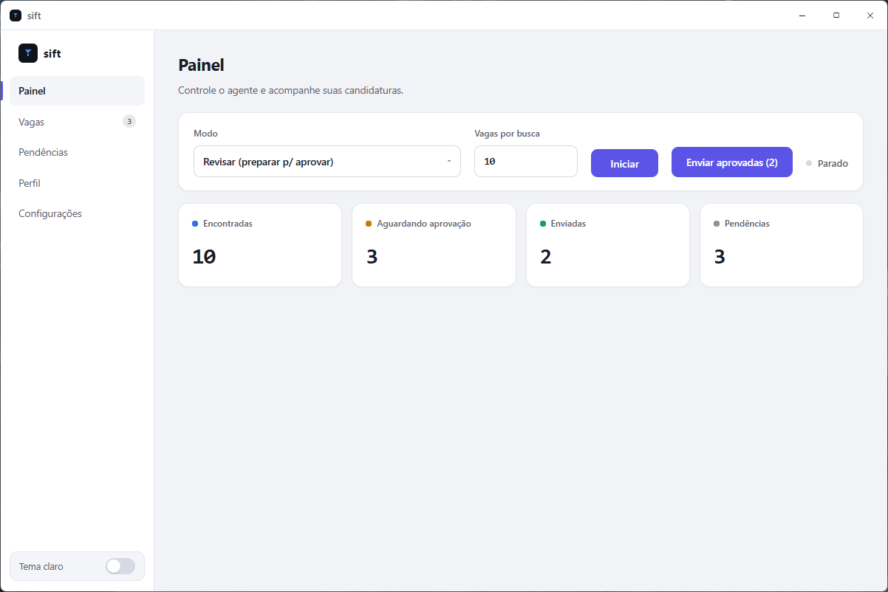
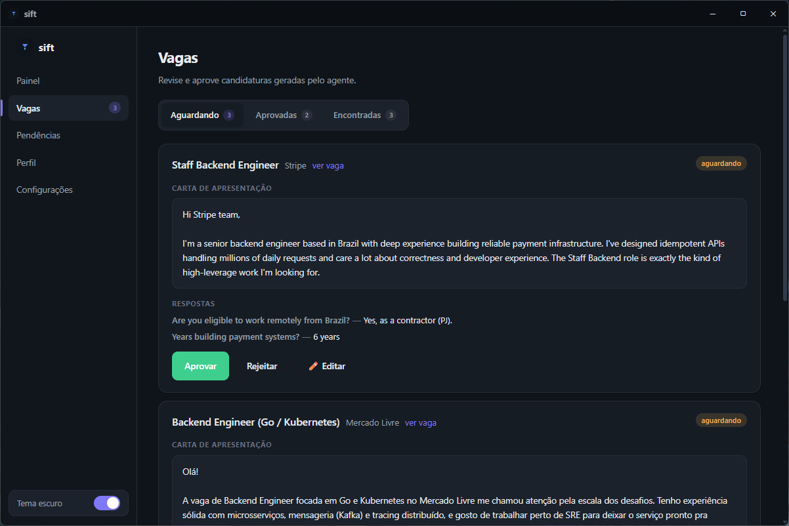

O Sift busca no LinkedIn, peneira por aderência ao seu perfil e prepara cada candidatura com carta personalizada. Você revisa e aprova — em minutos, não horas.

Envie seu currículo uma vez. O Sift extrai seus dados e monta seus critérios de busca — cargo, senioridade, modelo de trabalho e salário.
Ele busca vagas no LinkedIn, calcula a aderência de cada uma ao seu perfil e prepara a carta de apresentação e as respostas.
Revise as candidaturas prontas, edite o que quiser e dispare com um clique. No modo Revisar, nada sai sem o seu OK.
Cada vaga é analisada contra o seu currículo e marcada como match alto ou médio. Nada de aplicar no escuro.
Uma carta por vaga, no estilo que você escolher: curta e simples, técnica ou persuasiva.
No modo Revisar, nenhuma candidatura é enviada sem a sua aprovação. Edite a carta antes de mandar.
Pretensão, disponibilidade, data de início — preenchidas a partir do seu perfil, sem retrabalho.
App desktop nativo. Seus dados e a sua sessão do LinkedIn ficam na sua máquina.
Uma interface afiada, em Geist, que combina com o seu setup — de dia ou de madrugada.

Sem API key, sem cobrança por token, sem servidor intermediário. O Sift usa o que você já tem — o raciocínio roda na sua conta e a navegação acontece no seu navegador.
O agente roda na sua assinatura do Claude Code. O raciocínio — buscar, avaliar aderência, escrever cada carta — acontece na sua própria conta, sem cobrança por token e sem passar por um servidor nosso.
A extensão Claude para Chrome controla o LinkedIn direto no seu navegador, com a sua sessão já logada. É o agente navegando como você navegaria — só que sem parar.
O Sift roda como app desktop e usa a sua própria sessão do LinkedIn. Seu currículo, seus dados e suas candidaturas ficam na sua máquina — nada passa por um servidor nosso. Você escolhe o modelo de IA do agente e mantém o controle a cada envio.
Baixe o Sift e deixe o agente trabalhar enquanto você foca no que importa: as entrevistas.